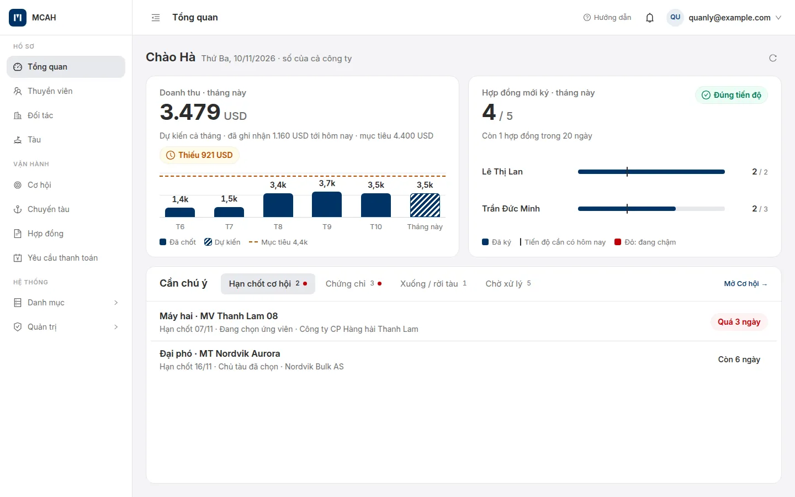
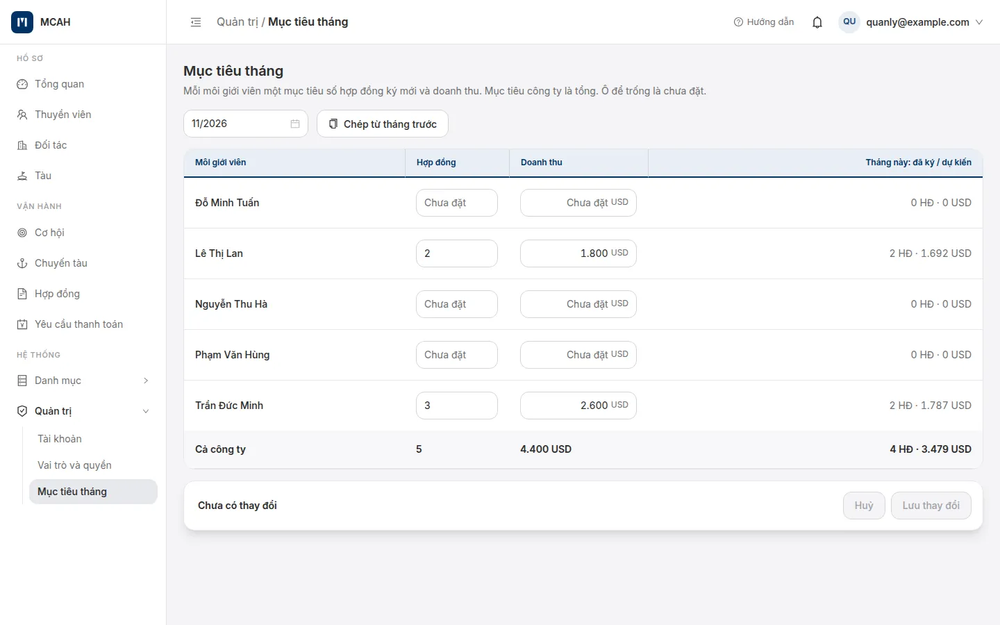

Tổng quan (Dashboard)
Các con số trên Tổng quan, cách tính, và đặt mục tiêu tháng.
Trang đầu tiên sau khi đăng nhập, vừa một màn hình máy tính. Nhìn 5 giây là biết tháng này đang đạt hay chậm, và hôm nay có việc gì đã quá hạn. Màu đỏ chỉ dành cho việc quá hạn hoặc đang chậm.

Doanh thu · tháng này
Phần chênh lệch giữa tiền thu chủ tàu và tiền trả thuyền viên, của hợp đồng hiệu lực hoặc đã kết thúc. Cột tháng này là số dự kiến, so với mục tiêu.
Hợp đồng mới ký · tháng này
Đếm khi hợp đồng được duyệt lần đầu. Nhãn Đạt mục tiêu, Đúng tiến độ hoặc Chậm tiến độ; quản lý thấy thêm một dòng cho từng người.
Cách tính
- Hợp đồng mới ký được đếm một lần, vào tháng của ngày duyệt lần đầu. Đưa về Nháp rồi duyệt lại không đếm thêm.
- Vạch đứng trên thanh là tiến độ cần có tới hôm nay (ví dụ ngày 4 của tháng 30 ngày, mục tiêu 3 → cần 0,4). Thanh đỏ khi số đã ký còn nằm trước vạch. Phần gạch chéo (chỉ ở màn môi giới viên) là hợp đồng sắp vào: chờ duyệt, nháp, chủ tàu đã chọn.
- Doanh thu: khoản hằng tháng chia theo số ngày hợp đồng nằm trong tháng (chênh 1.000 USD/tháng, bắt đầu 16/11 → tháng 11 được 500 USD); khoản một lần tính trọn vào tháng bắt đầu. Hợp đồng nháp, chờ duyệt, bị từ chối chưa tính. Sửa ngày rồi duyệt lại thì các tháng cũ được tính lại.
- Tính cho ai: hợp đồng chốt từ cơ hội tính cho người phụ trách cơ hội; hợp đồng của chuyến tạo tay tính cho người tạo hợp đồng.
| Tab Cần chú ý | Gồm | Đỏ khi |
|---|---|---|
| Hạn chốt cơ hội | Cơ hội đang mở có hạn chốt trong 7 ngày tới hoặc đã qua | Đã qua hạn chốt |
| Chứng chỉ | Hết hạn trong 60 ngày tới hoặc đã hết, trừ khi đã có bản mới | Đã hết hạn |
| Xuống / rời tàu | Sắp xuống tàu trong 30 ngày; ngày rời dự kiến trong 30 ngày hoặc đã qua mà chưa ghi rời | Quá ngày rời dự kiến |
| Chờ xử lý / Việc của bạn | Hợp đồng chờ duyệt, bị từ chối, nháp; yêu cầu thanh toán cần duyệt, cần gửi, quá hạn | Bị từ chối, quá hạn thanh toán |
Trang tự mở tab đầu tiên có việc quá hạn. Bấm dòng có nhãn Quá n ngày để mở thẳng bản ghi đó. Quản lý thấy số cả công ty, mỗi môi giới viên một dòng (người chậm tô đỏ); môi giới viên chỉ thấy số của mình và tab cuối là Việc của bạn.
Đặt mục tiêu tháng
Ở Quản trị → Mục tiêu tháng, chọn tháng, nhập số hợp đồng và doanh thu USD cho từng môi giới viên rồi lưu. Chép từ tháng trước điền nhanh các ô đang trống. Mục tiêu công ty là tổng mục tiêu của mọi người, và là mốc để Tổng quan báo Đúng tiến độ hay Chậm tiến độ.
